The pitchIN team — including non-technical colleagues — who want to set up a space like this and run the same workflow. It explains what was done, shows real examples and screenshots, is honest about what the AI is bad at (UI, especially), gives a concrete plan to clone the setup, and lays out how to scale it.
🧭1 · Executive summary
This was a controlled experiment: can an AI agent do real engineering work on the actual pitchIN codebases — safely — when a non-technical product manager is driving?
The test feature was Corporate Actions: a share-buyback voting flow where pitchIN, acting as nominee, collects investor votes but never decides the outcome itself. It's a genuine cross-system feature — it touches the .NET backend, both Angular apps (admin + customer), and the Playwright end-to-end suite.
✅ What it proved
- An agent can stand up the entire local environment — backend, database, both web apps — from a laptop with nothing installed, unaided.
- A disciplined, reviewable workflow with human checkpoints produces work you can trust.
- None of it risks production. The AI setup lives outside the product repos; product changes flow through the normal PR pipeline, clean of AI-infra files.
⚠️ What it taught the hard way
- AI is genuinely weak at UI. Two screens shipped "green" but rendered nothing or broken — a passing build says nothing about whether a screen works.
- Verifying cost ~9× more than building. The autonomous build was cheap; human-supervised QA was where the cost went.
- The bottleneck is one person. One verifier gates everything. Fix that first.
The environment and guardrails are proven enough to run a wider, contained trial. To do that: (a) hand the QA/verification role to a dedicated person, and (b) package this setup so teammates can clone and run it themselves — which Section 11 is about.
📊2 · The numbers
All dollar amounts are token value at API list prices — "what these tokens would cost if billed through the API." The sprint ran inside a Claude subscription (a flat monthly fee), so the actual out-of-pocket cost was the subscription, not these numbers. Use the list-price figures for one question only: what would this cost to scale up via the API?
The single most important number is the 9×: building was the easy, cheap part; proving the build was correct was the expensive part. Section 9 explains why, and what it means for scaling.
🛤️3 · What actually happened: the eight stages
The workflow is a pipeline. Each stage has a job, an input, and an output, and most are a named skill invoked by typing /<name>. The golden rule throughout: decisions are made (by a human) and written down before any code is generated.
A vague voice note. The AI interrogates it, challenging fuzzy terms against pitchIN's domain language and forcing precise answers.
The grilled context becomes a written PRD, published as a tracked issue.
The PRD is sliced into ~21 small, independent "vertical slice" tickets.
Each ticket runs through a state machine → labelled ready-for-agent, tagged by repo and whether it needs a real browser test.
Build a throwaway HTML mock that reuses the real design system, and sign it off. The mock becomes the spec the builder follows.
One ticket at a time, tests-first. Planner = Opus, implementer = Sonnet. Commits to a local-only branch; never closes, never pushes.
An independent agent boots the real app and checks the real database. Produces a plain-language "here's what to check" report.
A person clicks through it and closes the ticket — or bounces it back.
Lift only the feature commits onto a clean product PR. The production pipeline never sees an AI-infra file.
It started with a literal voice note
Here is the actual opening message, transcribed, that kicked off the entire feature:
"I want to build a new feature. So we have companies that are offering corporate exercises, um, for investors, to vote… because we are the nominee company, we act as the middleman to collect all the votes… there's no money flow… Admin will be getting all those information from the issuer, finalize it outside of the platform, put it into an Excel sheet, and then upload it… We should match by the investor ID… for now, we will be sticking to share buyback… when investors log in, they should see this vote offer as a pop up. It should be persistent because it's very important…"
A clear intent, full of unresolved questions. Rather than jump to code, the grilling resolved them first — so by the time any code was written, the hard product decisions were already made, debated, and recorded, not buried as assumptions inside generated code. The screen below is what that voice note eventually became:
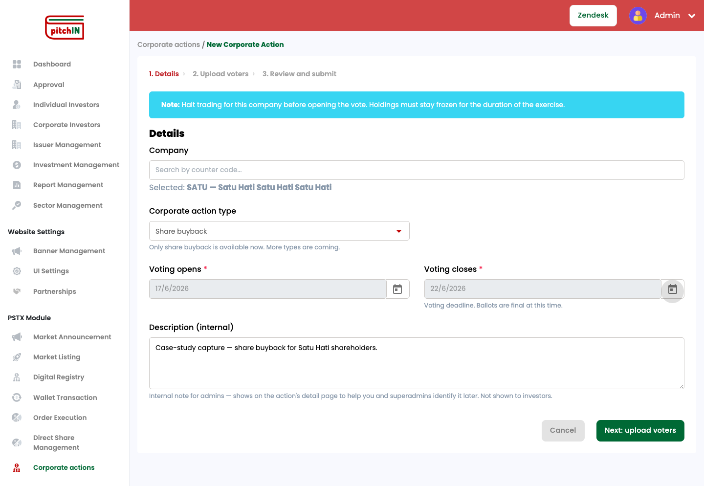
⚖️4 · The decision that became the spec
The single most important question in the whole feature: when the votes are in, who decides the outcome?
It's tempting to have the platform tally votes and declare "passed" automatically. But pitchIN is the nominee — it holds shares on investors' behalf; it is not the decision-maker. Getting this wrong would have the platform overstepping its legal role. This was captured in a short, durable decision record — ADR-0001:
One vote per investor
Per head, not weighted by shareholding.
Tally only
The platform counts votes — it never computes pass/fail.
Human publishes
An admin publishes the outcome as a separate, deliberate step. No auto-decide, ever.
When the autonomous loop later built the "publish outcome" and "cast vote" tickets, the planner read that decision record and implemented the right behaviour — the tally logic computes counts but stops short of declaring a result. Nobody re-explained the rule per ticket. The written decision was the specification; the code was the transcription.
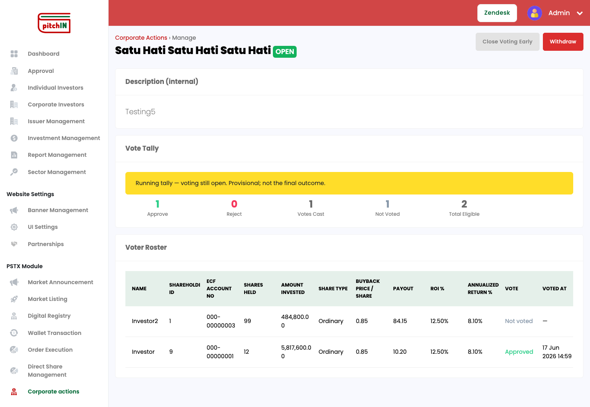
🧪5 · The test that "looked done" but had never run
Issue #8 was the hardest ticket: an end-to-end test of the whole corporate-actions journey across all three apps — admin creates a buyback and uploads voters → SuperAdmin approves → investor votes → admin closes and proposes an outcome → SuperAdmin publishes → investor sees the result.
The autonomous loop wrote the test. It compiled cleanly. It looked finished. And it had never actually run. The builder itself was honest about this in its notes — the stack wasn't running when it committed, so the real test had to be completed by the human verifier.
When the independent verification step booted the real stack and actually ran it, it took ~13 runs and ~12 fixes to reach a genuine green pass (36 seconds, all steps passing). Every fix was a runtime fact no compiler, build, unit test, or code review could ever catch — hash-based URLs, a search box that debounces before it filters, a confirmation modal mid-flow, tests that assumed "the first row" instead of finding data by ID.
Zero lines of product code changed. All 12 fixes were in the test itself. The feature was fine; the test was fiction until something ran it. This produced a permanent rule (ADR-0002): an e2e test isn't "done" until it produces a real passing run against a live stack. And the sharpest lesson of the sprint: autonomous coding is viable with the right verification gate — and dangerous without it.
🖼️6 · AI is weak at UI
This is the most important caveat in the whole report. The AI is good at logic and bad at UI — and worse, the failure is invisible.
When the AI writes backend logic, an executable test passes or fails — a clear signal. When it writes a screen, the build can pass, the types can check, the unit tests (which use fake data) can go green… and the screen can still render nothing, or render broken. A passing build tells you the code compiled. It tells you nothing about whether a human sees a working page.
Two separate screens shipped "green" and were broken, both caught only when a human looked at the rendered page:
👻 The blank investor screen
A service grabbed the whole API envelope { result: [...] } instead of unwrapping the .result inside it. Compiled perfectly; three screens rendered nothing. Fix: a reusable unwrapResult() helper so it can't recur silently.
📐 The collapsed admin table
A table used the wrong markup variant — <table mat-table> instead of <mat-table> — collapsing every cell into one column. Build: green. Screen: unusable.
What we did about it
Screen-smoke tier
A check that loads the real screen in a real browser and asserts the content is actually there. Catches "renders-but-broken."
Hard rule
A front-end ticket is only "verified" if a screen-smoke ran for that screen this run — otherwise a human looks. No exceptions.
No self-grading
The agent that builds a screen is forbidden from editing the test that grades it (ADR-0009). Never mark your own homework.
When it's done right, it looks like this — the real built investor vote page, not a mock:
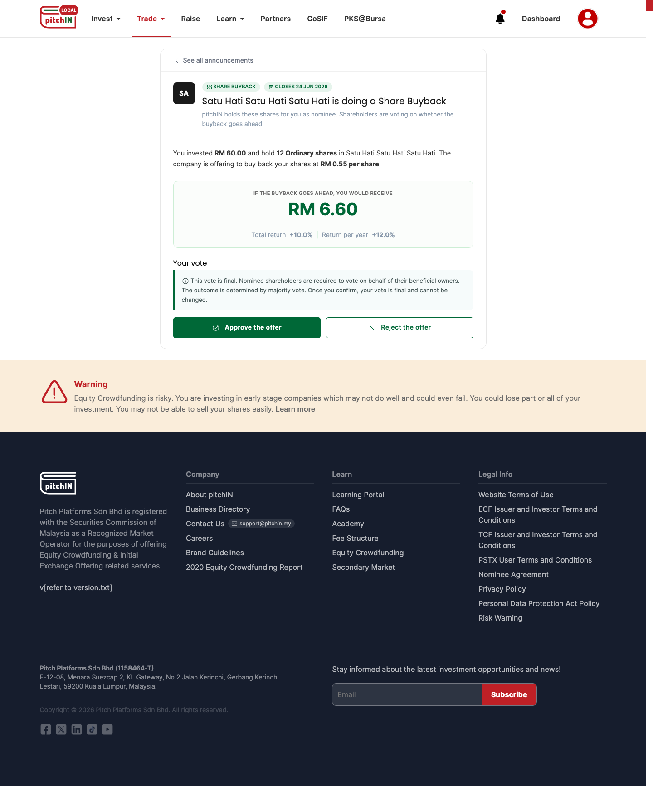
Trust the AI with logic that has a clear pass/fail test. Do not trust it with UI on the strength of a green build — make it prove the screen renders, or look at it yourself.
📷The maker-checker journey, on real screens
Corporate Actions is a three-role flow. Each role's screens were built by the loop and are shown here running locally:
All 13 screens below are real captures from the feature running locally — on test data the AI generated itself (see § AI & test data).
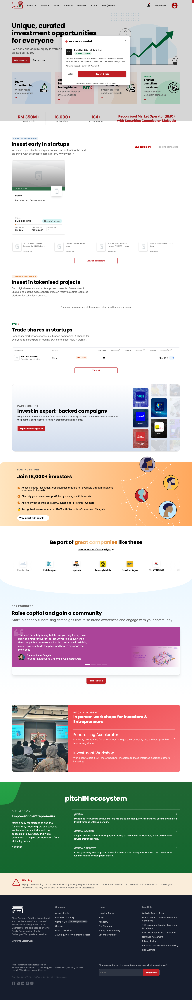
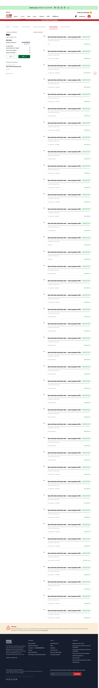
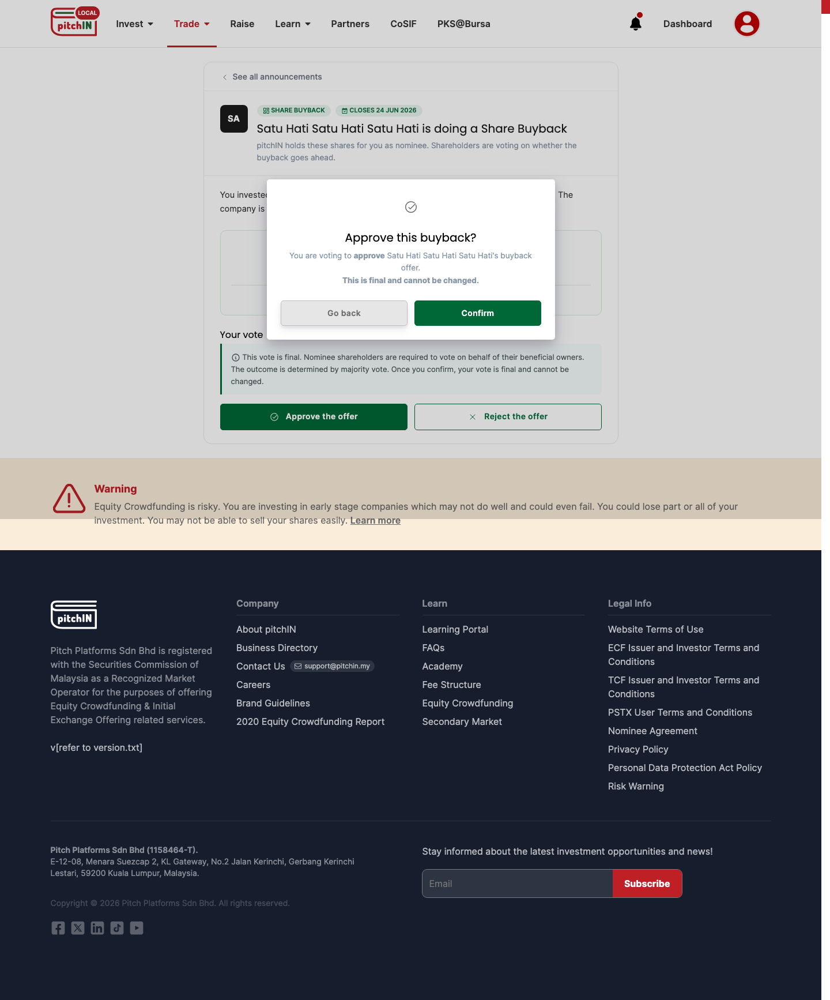
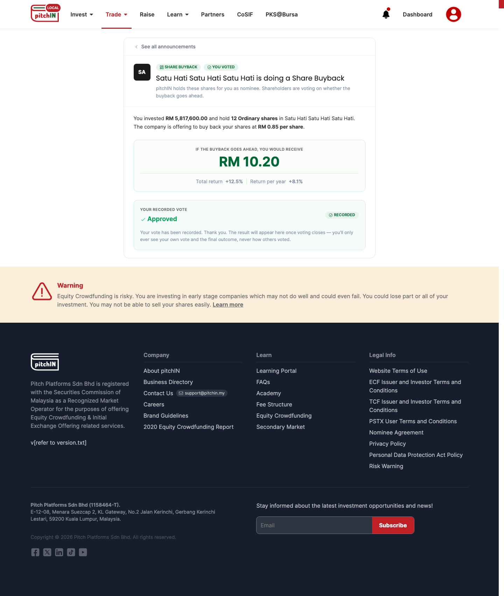
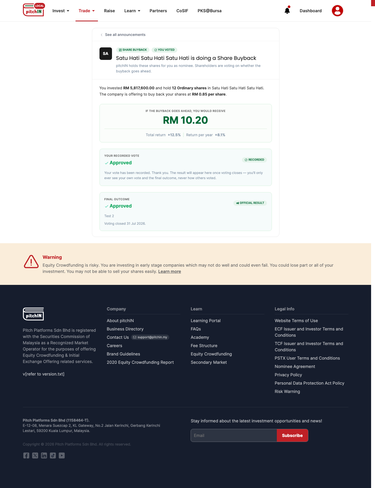
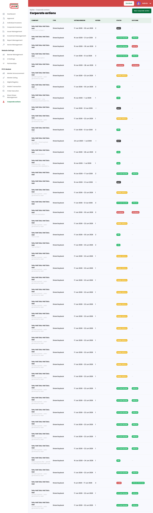
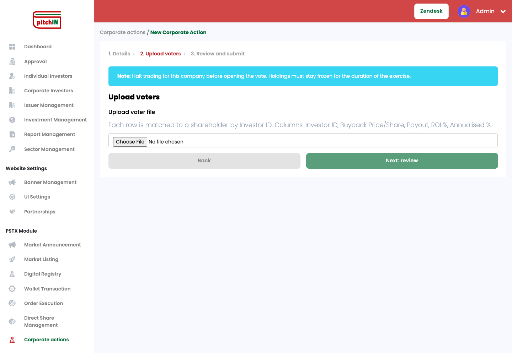
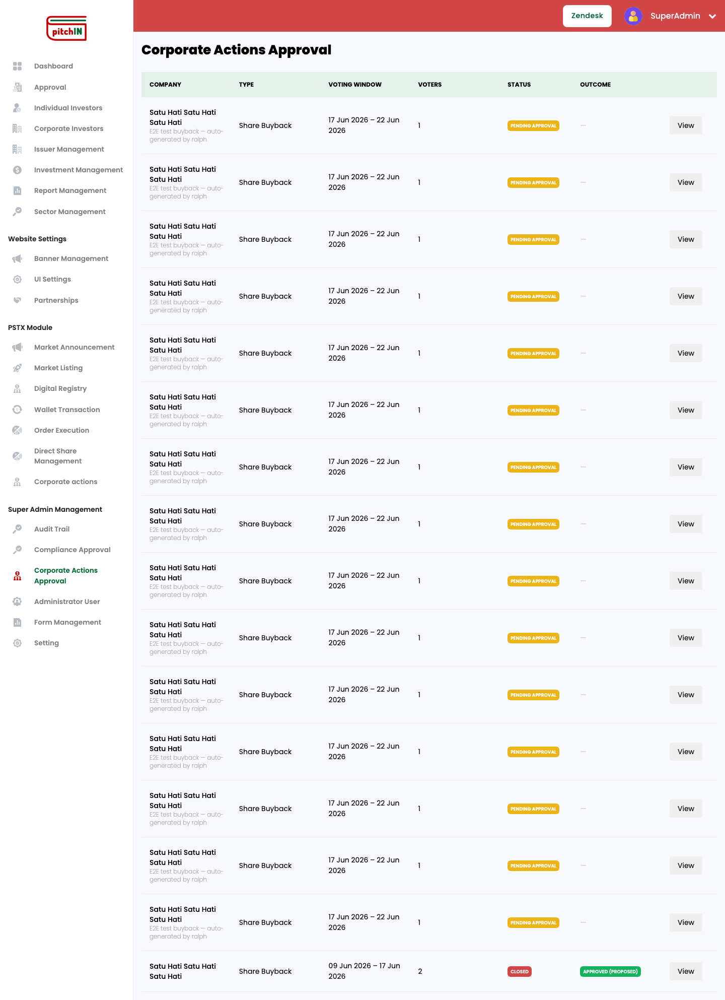
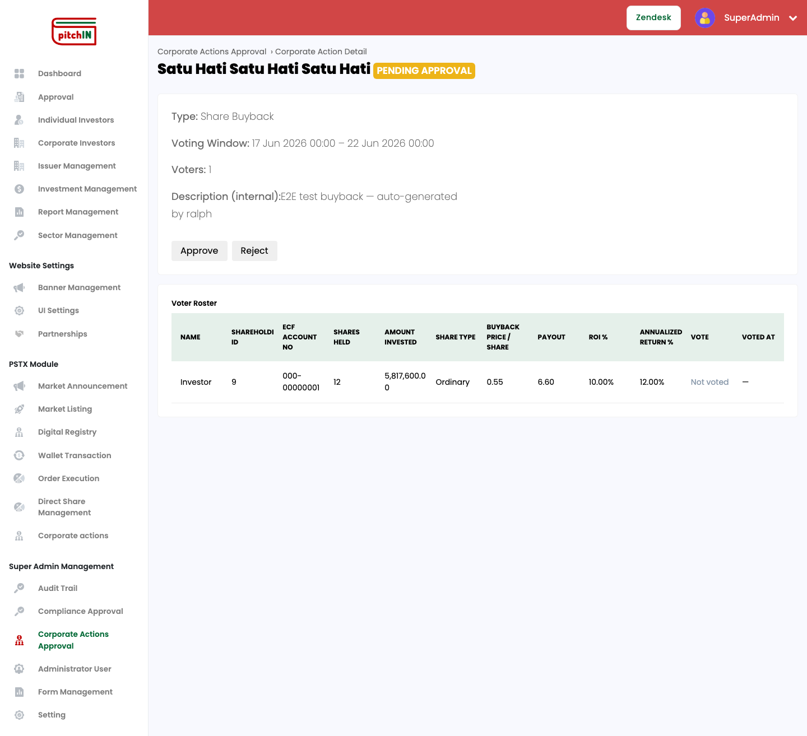
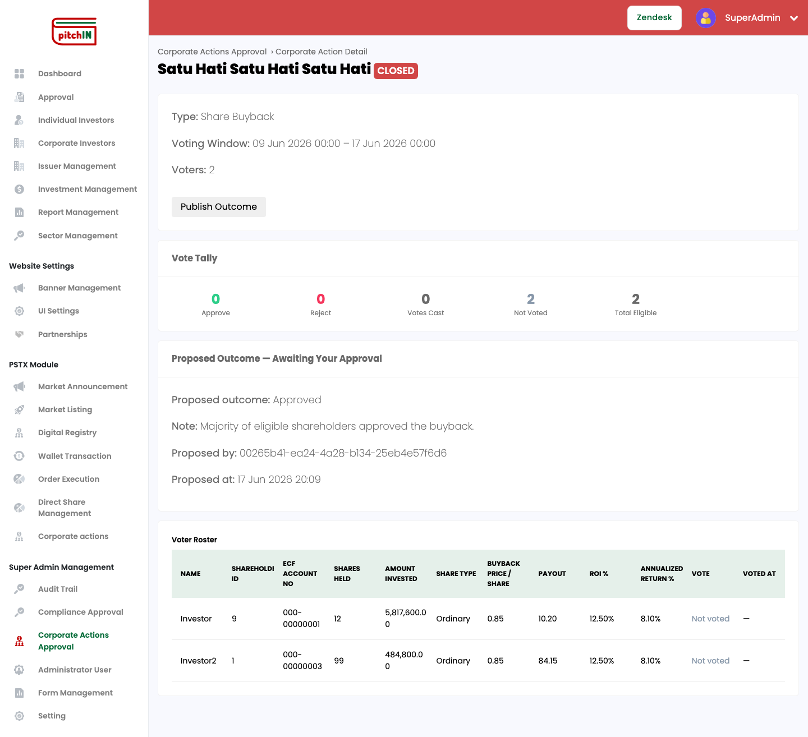
🤝7 · What the human did vs. what the AI did
The cleanest way to understand this workflow: humans made the decisions; the AI did the execution. Every time.
- What to build (the voice note)
- How votes work (one-per-head, tally-only, no auto-decide)
- What each screen looks like (signed-off prototype)
- Which tickets are ready to build
- Whether a result is actually correct (final click-through)
- When to close a ticket / ship a PR
- Interrogated it, sharpened it, drafted the PRD
- Implemented exactly that, by reading the decision record
- Built the Angular screens to match
- Built them one at a time, tests-first
- Re-ran the app + DB and reported what it found
- Never closed, never pushed — handed off and waited
The AI was never trusted to decide the product, mark its own work correct, close a ticket, or push to production — exactly the high-stakes, hard-to-reverse actions. Those all stayed with a human.
⚙️8 · Why this works: the core mechanism
It would be easy to read this as "AI is fast." That's the hook, not the substance. The substance is three structural choices that make the output trustworthy:
Decisions before code
The grilling, PRD, and decision records force every hard choice to be made and written down before code exists. The AI implements decisions rather than inventing them — which is why 21 separately-built tickets are coherent.
Human-owned artifacts the AI reads
The spec, tickets, glossary, and decision records aren't bureaucracy — they're the AI's inputs. The same documents a human uses to understand the feature are the ones the AI uses to build it.
Verification by structure
The agent that builds is never the agent that verifies. What grades a screen is a protected file the builder can't touch. "Done" means a real run passed, not it compiled.
Take any one away and it stops working. Skip the decisions → incoherent code. Skip the written artifacts → the AI guesses. Skip independent verification → you ship blank screens with green checkmarks.
💸9 · The economics
Remember the list-price caveat from Section 2: these are token values at API rates, not money spent.
The cost, stage by stage (corporate-actions pipeline)
Separately, a one-time workspace setup (getting the backend, database, and both web apps to boot on a fresh laptop) cost ~$180 in token value — paid once, reused forever.
Where the QA money actually went
The surprise: there's no single expensive task. The driver is session length itself. Tracing the biggest verification run (the $173 one, 756 steps), the cumulative % of cost reached at each step:
The last 156 steps cost more than the first 400 combined. Each step replays everything before it, so a long session gets more expensive per step the longer it runs. Dollars track how long the agent ran, not what it did in any one step.
Split by activity (share of the verifier's steps, not dollars), it's roughly:
| What the verifier spent its steps on | ~share of steps |
|---|---|
| Reasoning, planning, and re-running the build/test gates | ~70% |
| Booting / fixing the local environment | ~8% |
| Reading and tracing the code | ~8% |
| Driving the app in a browser to check screens | ~7% |
| Checking the database actually changed | ~3% |
| Writing the plain-language verification report | ~3% |
Approximate — attributing a step to one activity is fuzzy, because most of a step's cost is the context replay, not the action itself.
While capturing the screenshots for this very case study, the agent hit it again: the customer app's default start command pointed at the wrong API port (:44311 instead of :44367), so every login silently failed with no visible error. It cost several steps to work out that login wasn't broken — the app was just talking to a dead address. Multiply that plumbing across every QA run and it adds up.
How we get this cost down
The cost structure points straight at the fixes. None reduce rigor — they remove waste. (Tactics and figures from current Anthropic guidance and agent-engineering write-ups — sources at the foot of this page.)
1 · Pay for the environment once
Pre-bake a "golden" local stack — dependencies installed, database migrated, test accounts seeded — so the verifier starts on a known-good system and goes straight to verifying. (GitHub's prebuilt dev environments cut startup "from minutes to under one" the same way.) We've paid the one-time ~$180; baking it into an image makes it free, repeatable, and kills the wrong-port traps.
2 · Gate cheaply first
Run the free deterministic checks (build, type-check, unit tests, a scripted smoke) before waking the costly LLM verifier. A 10-second compile failing should never cost a 750-step verification.
3 · Keep sessions short & lean
Since dollars track length: split big verifications into smaller runs, and auto-clear stale context once acted on — Anthropic reports up to 84% fewer tokens on long runs. Don't change the fixed front of the prompt mid-run (it forces re-paying full price for context).
4 · Cheaper model for grunt work
Most steps are low-judgment (reading logs, flipping labels, writing the report). Route those to a cheaper model (~15–25× cheaper); reserve the expensive model for the actual "does this feature work?" judgment.
These stack: cheaper grunt work (~5–10×), aggressive context-clearing (up to ~84% fewer tokens), and a golden environment (removing the boot/fix steps entirely). A QA pass that costs ~$458 of token value today could plausibly drop well below half that — without checking anything less carefully.
🌱The AI made its own test data
Getting realistic test data is a standing pain at pitchIN — and the AI generated its own, on demand, throughout this sprint.
To capture the screens above, the agent didn't wait for someone to hand it a dataset. It created exactly the scenarios it needed, directly in the isolated local database — additively, without touching production data or product code:
A fresh open buyback
A new share-buyback action with an eligible, not-yet-voted investor — so the votable detail page renders with real figures.
A closed action with an outcome
An already-closed action with a proposed outcome — so the SuperAdmin "publish outcome" screen has something to show.
Tests that seed themselves
By rule (ADR-0002), every end-to-end test creates and finds its own records by ID rather than depending on whatever happens to be in the database.
That last rule is the durable win: because the tests are data-self-contained, QA scenarios are reproducible and don't rot when the shared database changes underneath them. The same capability that seeds a demo can seed a test fixture — which is exactly the gap the team keeps hitting.
🎓10 · Learnings
- The grilling is the product work. The most valuable half-hour was the AI interrogating a vague idea until it was precise. "Build me X" gets you confident, coherent, wrong code.
- A green build is not a working feature — especially for UI. Treat "the screen renders" as something to prove.
- Never let the agent grade its own work. Independent verification caught every escaped bug. This single rule separates "useful" from "dangerous."
- A test that compiled but never ran is fiction. "Done" must mean a real run passed against a live system.
- Mocked unit tests inherit the AI's blind spot. For anything that writes to the database, verify against the real database — a save that silently persisted nothing passed all seven unit tests.
- The AI can generate its own test data. It seeded the exact scenarios it needed in the local DB and writes data-self-contained tests — directly useful given our standing test-data pain.
- Cost lives in verification, not generation. ~9× more. Budget and staff accordingly.
- Keep the AI setup completely separate from production. The "brain" never enters a product repo; product PRs are clean; the pipeline is untouched.
- The bottleneck is one human. Everything funnels through a single verifier today.
🛠️11 · How to set up your own space
Goal: a teammate clones one thing, runs one script, and has the same working setup. Here's the honest state today and what gets us there.
What the setup actually is
Your "space" is a plain folder (not a code repo) that sits next to the four product repos and contains the "brain": orientation docs (CLAUDE.md), the skills and agents (.claude/), the local database/storage/queue (infra/, one docker compose file), the autonomous-loop scripts (ralph/), the QA runner (bin/), and the runbooks + decision records (docs/). The four product repos stay separate git repos, cloned as siblings — the brain integrates with them but never lives inside them. That's the production-safety boundary.
~90% of the brain is already portable — no machine-specific paths. The docs, skills, agents, docker compose infra, QA runner, and loop scripts all work on any Mac as-is.
The honest gaps — four things between "copy the folder" and "clone and go"
- A leftover folder to clean up. A throwaway experiment folder (
km-spike/) needs removing and a.gitignoreadded before the setup is shared, so nothing stray is ever committed. - A name is hard-coded. The loop's work branch is
nicholas-ralph; for a teammate it should become<your-name>-ralph— one config value to make a variable. - No one-command setup script yet. ~9 setup steps (install toolchain, clone repos, start DB, run migrations, log in to GitHub) are documented and verified but still manual. Very scriptable; just not wrapped in a
bootstrap.shyet. - GitHub access is per-person. Each teammate needs their own login with read access to the issue tracker — an access task, not a code task.
The recommended way to share it
Package the brain as one repository — the planned pitchplatforms/pitchin-ai — that a teammate clones, and that clones the product repos next to itself via a setup script (not a mega-repo with product code copied in, and not git submodules — both would blur the boundary that keeps this safe). The target experience:
git clone github.com/pitchplatforms/pitchin-ai && cd pitchin-ai
cp .env.example .env # set your name + tracker login
gh auth login # your GitHub account
bin/bootstrap.sh # clones repos, starts DB, migrates, installs deps
bin/local-qa.sh # confirm everything's greenThe setup isn't packaged for cloning yet — that's an approval-gated follow-up. The one genuinely urgent item before anything is shared is cleaning up the leftover km-spike/ folder. The rest is a focused half-day: write bootstrap.sh, make nicholas-ralph a variable, add .env.example + .gitignore, and push to pitchin-ai.
🚀12 · What's next: scaling this up
The POC is proven. Here's the path from "it works on my machine" to "it's how the company ships" — five moves, in order:
Take this proven build through the actual QA → staging → production path, so the POC's first feature lands as shipped product. It doubles as the cleanest live test of the "clean product PR" mechanic.
Run the same pipeline on a meatier, higher-value initiative — the owned KM platform that replaces the FAQ + Learning portal — to prove it holds up well beyond a single contained feature.
Package the setup so any colleague can clone it and run the workflow. This case study and the pitchin-ai repo (Section 11) are step one.
Define exactly how design, engineering, and product/QA hand off through this pipeline — one shared, documented way of working, with QA owning the verification gate.
With the workflow proven, shared, and role-aware, grow the agent fleet and widen scope across the product — bringing the QA-cost levers from Section 9 to bear so wider use stays cheap.
Everything above is direction; these are decisions. How aggressively to grow the agent fleet — one loop, or several scoped to different initiatives running at once? And what's the bar, if ever, for letting an agent's verified work reach staging without a human in the loop?
This is the shareable presentation of an internal pitchIN case study. The full technical record (Ralph loop mechanics, ADRs, branch model, known limits, and sources) is kept internally.